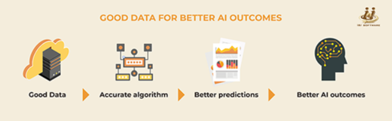

AI is no longer a sparkling mirage in the future. It is already touching our everyday lives in many, many ways, from Google's predictive email responses and Pinterest's LENS tool to shopping assistant bots, smarter GPS navigation, grammar checker tools, music recommendation apps and more.
Preparing your data and your organization for AI
While a large number of enterprises believe in the disruptive power of AI (85% according to this study by MIT and BCG), few actually have an AI strategy in place (around 39%) and even fewer have seriously invested in building AI systems (about 5%). Every organization today is at a different stage of data readiness for AI. Thus, it is likely that creating a new AI platform will involve a redesign—or at least, a reorientation—of several parts of your organization, starting with your approach to data.
Data is the basic building block or foundation on which massive intelligence systems are built.
If the quality of this 'raw material' isn't good, then any AI you develop based on it will be worthless. Let us consider the application of AI in making product recommendations to shoppers on an e-commerce website like Amazon. The ML algorithm will evaluate various factors such as a person's browsing history, purchase history, wish listed items and demographic information to arrive at product recommendations. Suppose an analysis of these factors shows that a person is interested in buying table linen. The AI will then recommend more varieties of table linen or items across different price points to the customer.
What if the ML had two additional data points: that (a) it is the end of October and (b) other customers with a similar demographic profile are also browsing table linen. This could mean that they are shopping for Thanksgiving three weeks away when family would visit. Knowing this data can help the AI make more accurate product recommendations and help the e-commerce firm market these as Thanksgiving specials. Promotional offers could be applied. The possibilities are many.
Data checks before investing in AI
Given how crucial the quality of data is to any sort of machine learning, here are some checks to perform before kicking off any AI project.
- Is your data accurate and consistent? If it's not, what cleansing processes would you need to put in place?
- Is your data complete? If it's not, how can you fill in the gaps?
- Do you know the lineage of your data? I.e., where each data point originates and where it flows to.

Take the time to evaluate and clean up your data. This means putting checks and balances in place to ensure that you're not taking in bad data. You may also need to make any process changes necessary to clean up tainted data so it becomes usable. If there are gaps in your data, figure out how to fill them. If your data formats are different, build a system by which they can all "talk" to each other.
Not all data in the world today is "good". But when you apply AI on bad data, bad decisions get made at a humongous scale. Thus, the relationship between AI and good data governance is a virtuous cycle. With better data governance, you give AI better data to work with, resulting in better decisions being made. This, in turn, leads to the creation of better data.